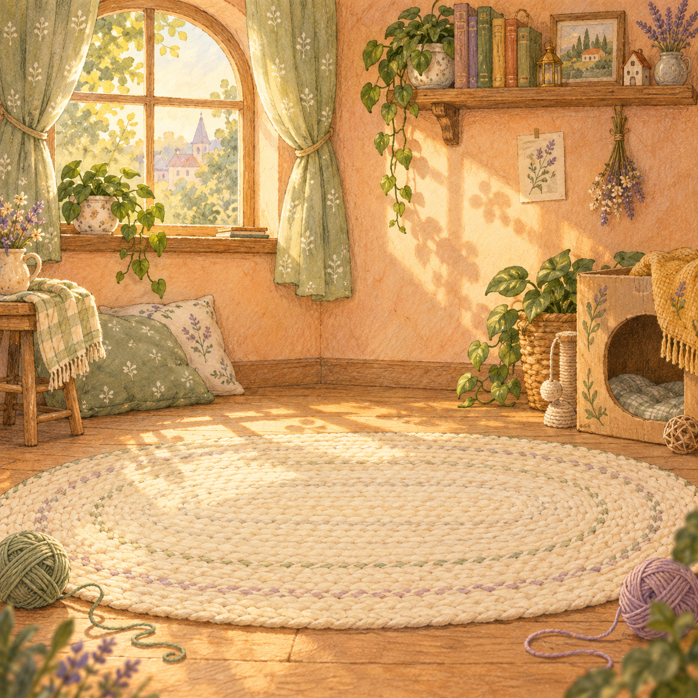
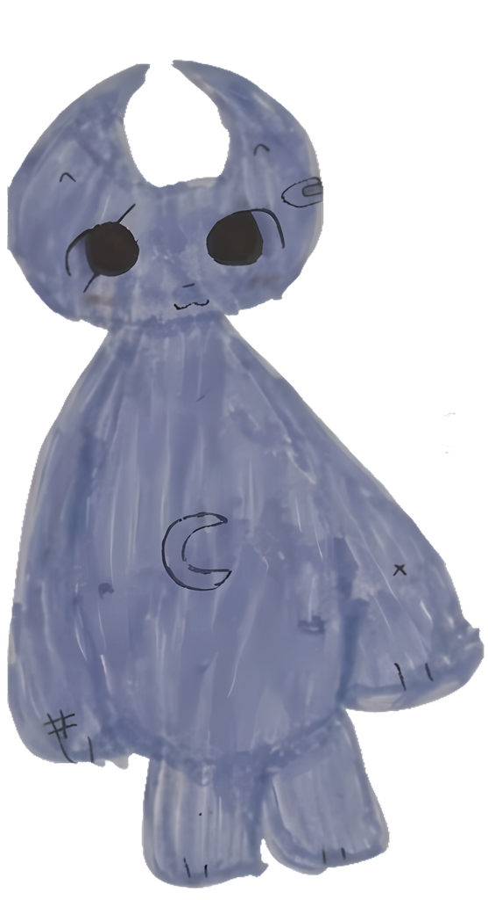
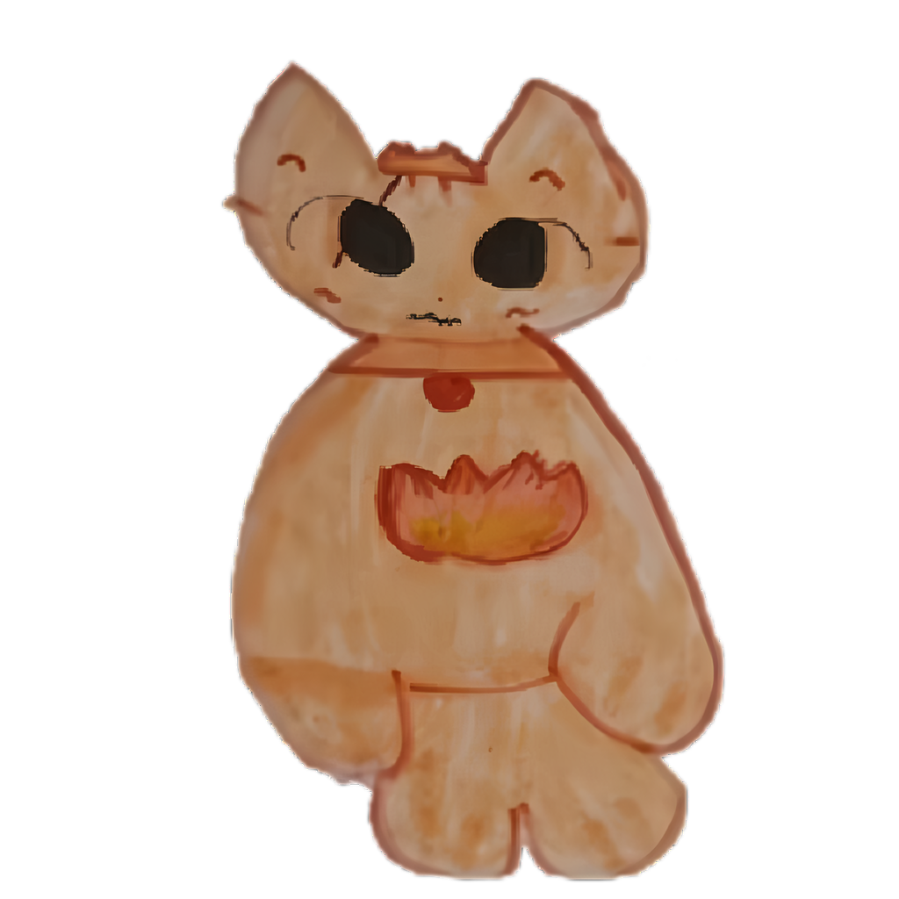
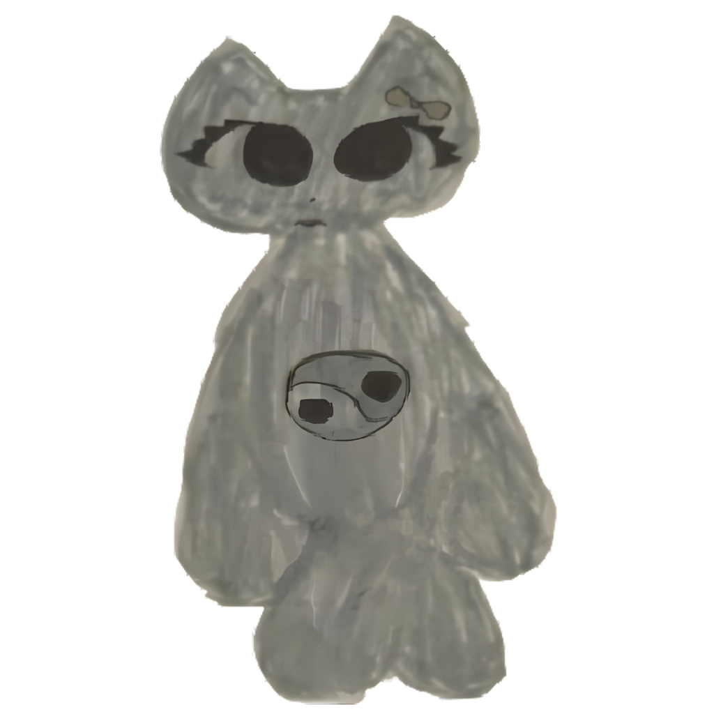
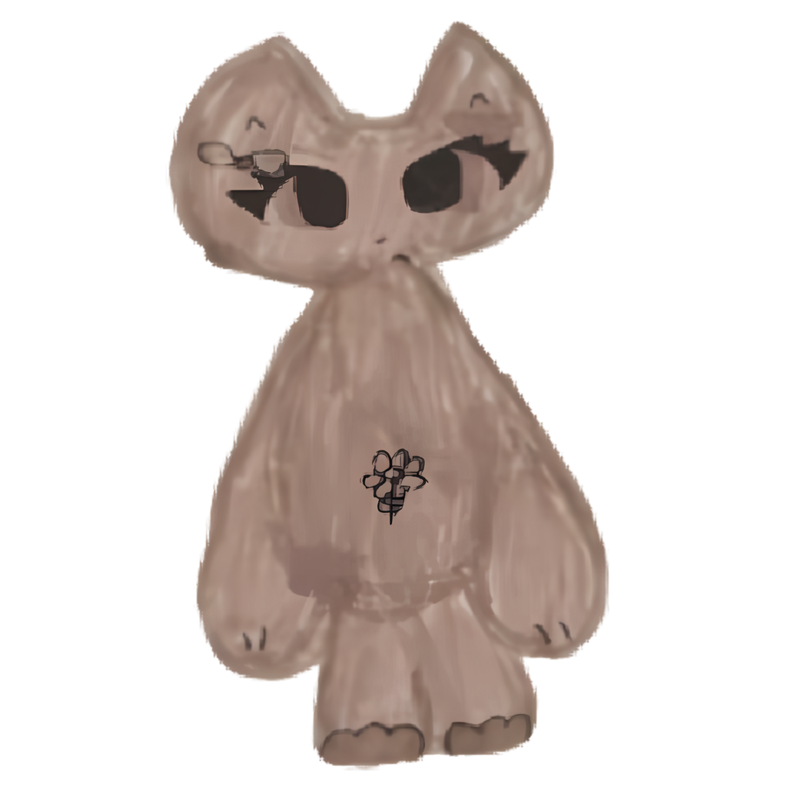

Котики с характером
Каждый герой начинается с детского рисунка. Живые линии и трогательные детали — всё как на бумаге.
МАЛЕНЬКАЯ ИГРА. БОЛЬШОЕ МУРР.
Оставьте суету за дверью. Здесь живут котики из настоящих детских рисунков — и каждый ждёт вашего внимания.



мурр, вы дома ♡Здесь живёт ваше хорошее настроениеПРОСТО БЫТЬ СЧАСТЛИВЕЕ
КотоВасия — кликер-антистресс для маленького перерыва. Несколько минут, любимые котики и чуть больше тепла в обычном дне.
Каждый герой начинается с детского рисунка. Живые линии и трогательные детали — всё как на бумаге.
Нажимайте, развивайтесь и открывайте новых котиков. Пусть ваша уютная компания становится больше.
Устройтесь поудобнее и переключитесь с повседневных дел на что-нибудь простое и доброе.
НАША ПУШИСТАЯ КОМПАНИЯ
У одного на животике огонёк, у другого — луна. Загляните в игру, чтобы познакомиться со всеми.


У каждого котика — своя история. Продолжите её в игре
ВАС УЖЕ ЖДУТ
Ваша маленькая уютная пауза — всего в одном клике.
Открыть КотоВасию